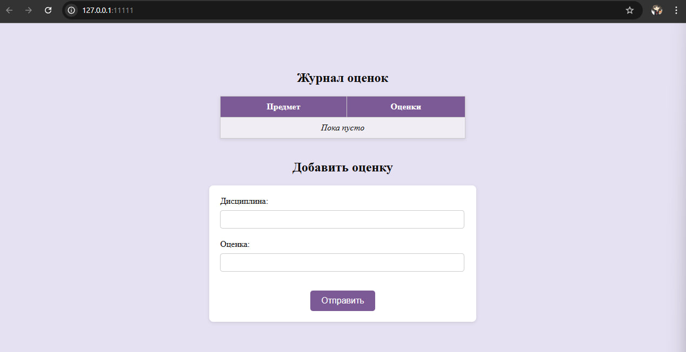
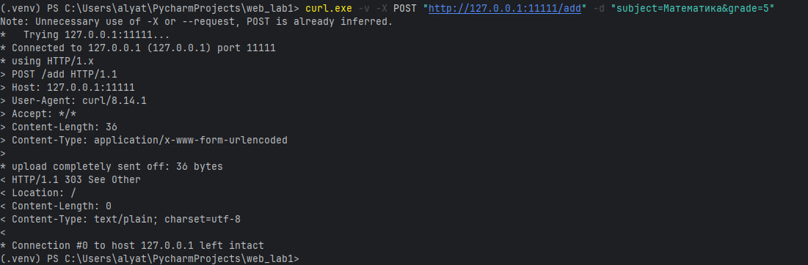
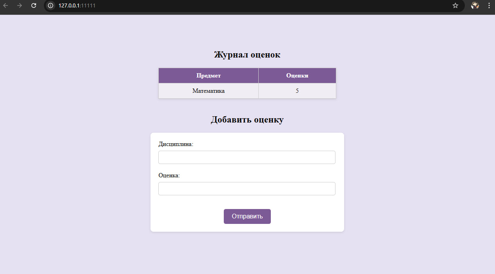
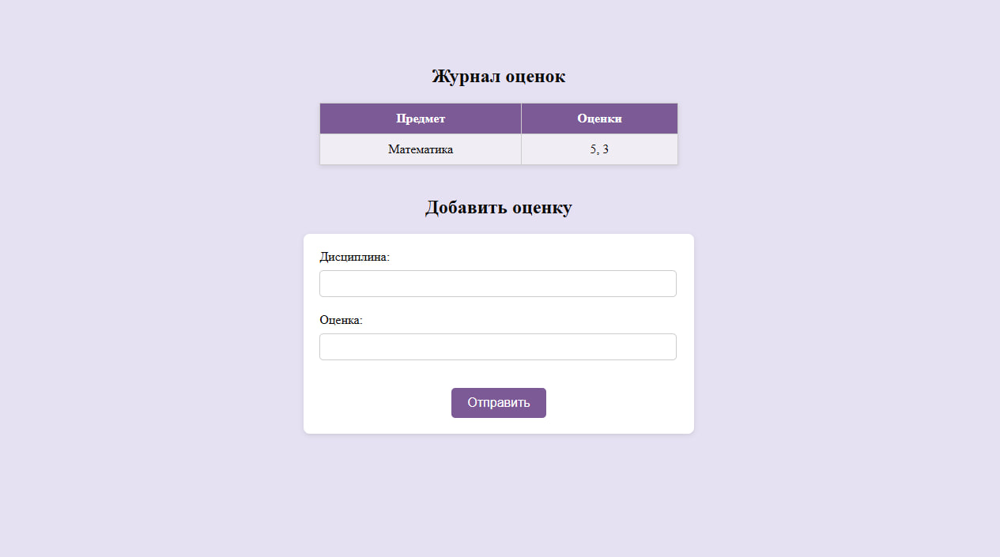
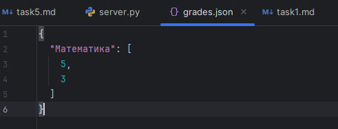

Задание 5: HTTP-сервер с поддержкой GET и POST-запросов
Условие
Написать простой веб-сервер для обработки GET и POST HTTP-запросов с помощью библиотеки socket в Python.
Сервер должен:
- Принять и записать информацию о дисциплине и оценке по дисциплине.
- Отдать информацию обо всех оценках по дисциплинам в виде HTML-страницы.
Принцип работы
- При
GET /сервер загружает данные об оценках и возвращает HTML-страницу с таблицей. - При
POST /addсервер принимает данные из формы (дисциплина и оценка), сохраняет их и перенаправляет обратно на главную. - Все данные сохраняются в JSON-файл, который используется при каждом новом запросе.
- Вся обработка запросов реализована вручную через
socketи TCP.
Код программы
Сервер (server.py)
import socket
import html
import json
from urllib.parse import parse_qs
grades = {}
DATA_FILE = "grades.json"
TEMPLATE_FILE = "index.html"
def load_data():
global grades
try:
with open(DATA_FILE, encoding="utf-8") as f:
grades = json.load(f)
except FileNotFoundError:
grades = {}
def save_data():
with open(DATA_FILE, "w", encoding="utf-8") as f:
json.dump(grades, f, ensure_ascii=False, indent=2)
def handle_request(request):
try:
line, *_ = request.split("\r\n")
method, path, _ = line.split()
except ValueError:
return response("400 Bad Request", "Неверный запрос")
if method == "GET" and path == "/":
return generate_html()
if method == "POST" and path == "/add":
try:
body = request.split("\r\n\r\n", 1)[1]
data = parse_qs(body)
subject = data.get("subject", [""])[0].strip()
grade = data.get("grade", [""])[0].strip()
if not subject or not grade.isdigit():
raise ValueError
grade_int = int(grade)
if not (1 <= grade_int <= 5):
raise ValueError
# Добавляет ключ-значение в словарь
grades.setdefault(subject, []).append(grade_int)
save_data()
# Редиректим после POST
return response("303 See Other", "", {"Location": "/"})
except Exception:
return response("400 Bad Request", "Неверные данные")
return response("404 Not Found", "Страница не найдена")
def generate_html():
try:
with open(TEMPLATE_FILE, encoding="utf-8") as f:
template = f.read()
except FileNotFoundError:
return response("500 Internal Server Error", "Нет шаблона")
rows = []
for subj, marks in grades.items():
safe_subj = html.escape(subj)
marks_str = ", ".join(map(str, marks))
rows.append(f"<tr><td>{safe_subj}</td><td>{marks_str}</td></tr>")
table = "\n".join(rows) or "<tr><td colspan=2><em>Пока пусто</em></td></tr>"
html_page = template.replace("{{rows}}", table)
return response("200 OK", html_page, {
"Content-Type": "text/html; charset=utf-8"
})
def response(status, body, headers=None):
headers = headers or {}
body_bytes = body.encode("utf-8")
headers["Content-Length"] = str(len(body_bytes))
headers.setdefault("Content-Type", "text/plain; charset=utf-8")
head = "".join(f"{k}: {v}\r\n" for k, v in headers.items())
return f"HTTP/1.1 {status}\r\n{head}\r\n{body}"
def run_server():
load_data()
with socket.socket(socket.AF_INET, socket.SOCK_STREAM) as server_socket:
server_socket.setsockopt(socket.SOL_SOCKET, socket.SO_REUSEADDR, 1)
server_socket.bind(("127.0.0.1", 11111))
server_socket.listen()
print(f"Сервер запущен: http://127.0.0.1:11111")
while True:
client_socket, _ = server_socket.accept()
with client_socket:
req = client_socket.recv(4096).decode("utf-8")
resp = handle_request(req)
client_socket.sendall(resp.encode("utf-8"))
if __name__ == "__main__":
run_server()
HTML-страница (index.html)
<!DOCTYPE html>
<html lang="ru">
<head>
<meta charset="UTF-8">
<title>Журнал оценок</title>
<style>
body {
background: #e6e1f2;
color: #0a0a0a;
padding: 5%;
}
h1, h2 {
text-align: center;
color: #0a0a0a;
font-weight: 600;
font-size: 24px;
}
table {
width: 40%;
margin: 20px auto;
border-collapse: collapse;
background: #fff;
box-shadow: 0 2px 6px rgba(0,0,0,0.1);
margin-bottom: 40px;
}
th, td {
padding: 10px 15px;
border: 1px solid #ccc;
text-align: center;
}
th {
background: #7b5a96;
color: white;
font-weight: bold;
}
tr:nth-child(even) {
background: #f1edf5;
}
form {
width: 40%;
margin: 20px auto;
padding: 20px;
background: #fff;
border-radius: 8px;
box-shadow: 0 2px 6px rgba(0,0,0,0.1);
}
form input {
padding: 8px;
margin: 8px 0px 20px 0px;
width: calc(100% - 20px);
border: 1px solid #ccc;
border-radius: 5px;
font-size: 14px;
}
button {
display: block;
margin: 15px auto 0;
padding: 10px 20px;
background: #7b5a96;
color: white;
border: none;
border-radius: 5px;
font-size: 16px;
cursor: pointer;
transition: background 0.3s;
}
button:hover {
background: #543e66;
}
</style>
</head>
<body>
<h1>Журнал оценок</h1>
<table>
<tr><th>Предмет</th><th>Оценки</th></tr>
{{rows}}
</table>
<h2>Добавить оценку</h2>
<form method="POST" action="/add">
<label>Дисциплина:</label>
<input name="subject">
<label>Оценка:</label>
<input name="grade" type="number" min="1" max="5">
<button type="submit">Отправить</button>
</form>
</body>
</html>
JSON
Для обеспечения сохранности введённых данных между перезапусками сервера используется файл grades.json.
В этот файл сохраняются все переданные через POST-запросы дисциплины и оценки.
После каждого нового POST-запроса:
- Новая пара "дисциплина — оценка" добавляется в словарь.
- Обновлённые данные записываются обратно в файл
grades.jsonс использованием модуляjson.
Так сервер сохраняет состояние даже после перезапуска, не теряя ранее введённые оценки.
Запуск
- Необходимо открыть терминал.
- В терминале запустите сервер:
- Протестируйте работу напрямую через браузер, либо через curl:
curl.exe -v -X POST "http://127.0.0.1:11111/add" -d "subject=Математика&grade=5"
Результат
Cо стороны сервера видим следующее: task5_server
{kind=link}
Заходим в браузер по адресу, указанному в терминале. Видим журнал: 
Попробуем протестировать работу сервера через curl: 
Успешно. Что мы видим в браузере: 
Протестировать работу можно и напрямую через интерфейс html-страницы. Вводим в поля предмет и оценку, нажимаем "Отправить". Журнал обновился: 
Посмотрим json, чтобы убедиться, что оценки сохранились и что они появятся при перезапуске сервера:

Все тесты успешны, и данные по оценкам за предметы сохранились в json. Значит, цели задания выполнены.
Выводы
- Реализован базовый HTTP-сервер с поддержкой обработки GET и POST-запросов на socket и TCP.
- Сервер принимает оценки по дисциплинам и сохраняет их в JSON-файл.
- На GET-запрос возвращается HTML-страница со всеми сохранёнными оценками.
- Работа над заданием позволила глубже понять принципы HTTP и обработку формы без фреймворков.